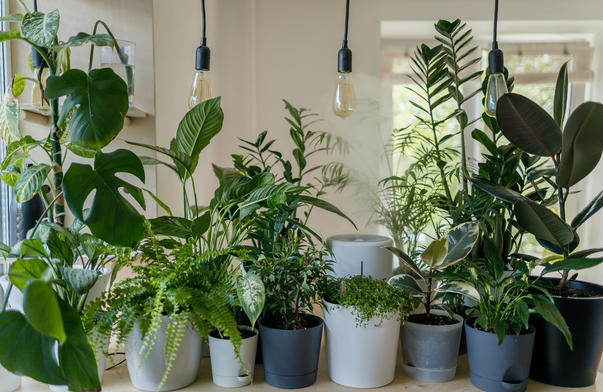

Plant Care
Keep your plants happy without making it complicated.
Everyday guidance for watering, light, humidity, feeding, repotting, and the little problems that inevitably show up along the way.


Start here
Good plant care is mostly about paying attention.
You don't need a perfect routine or a house full of expensive equipment. Most plants simply need the right amount of light, water, space, and time.
The goal isn't to memorize a rule for every plant. It's to understand what your plant is telling you and make small adjustments when something changes.
The basics
The things that matter most.
Light
Learn what bright, medium, and low light actually look like in a real home.
Watering
Know when to water, when to wait, and why a schedule doesn't always work.
Humidity
Understand when humidity matters and when your plant is perfectly fine without it.
Repotting
Learn how to tell when a plant has outgrown its pot and what to do next.
Feeding
A simple look at fertilizer, timing, and avoiding the temptation to overdo it.
Plant SOS
Something doesn't look right?
Start with the symptom you're seeing. Open a problem below for a few likely causes and what to check first.
Yellow leaves +
Yellow leaves can come from overwatering, poor drainage, older leaves naturally aging, or not enough light. Check the soil before watering again and make sure excess water can drain away.
Brown tips +
Brown tips can be caused by dry soil, dry air, inconsistent watering, or mineral buildup from water. Check the soil moisture first and look at your plant's normal humidity needs.
Drooping +
Drooping can mean the plant is thirsty, but it can also happen when roots are sitting in overly wet soil. Check the soil before deciding whether to water.
Curling leaves +
Curling can be a response to dry soil, low humidity, heat, intense light, or another source of stress. Look at the soil, location, and recent changes in care.
Falling leaves +
A few older leaves falling is not always a problem. Sudden or widespread leaf drop can happen after changes in light, watering, temperature, or placement.
Fungus gnats +
Fungus gnats are often associated with consistently damp potting mix. Letting the appropriate plants dry between waterings can help make the soil less inviting to them.
Plant care reality check
You probably don't need to do as much as you think.
Misting, watering schedules, humidity gadgets, and endless plant-care rules can make keeping houseplants feel harder than it needs to be. Let's separate useful habits from unnecessary fuss.
Need a better match?